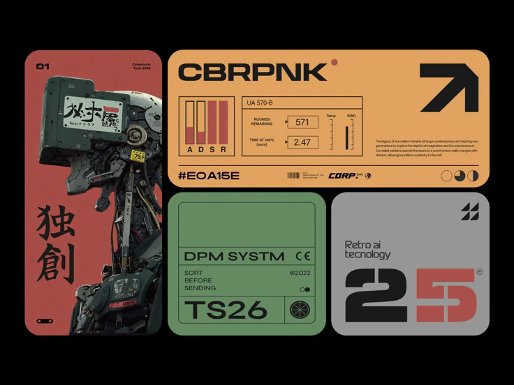

AURA Insights — Inaugural Edition
The first issue introduces AURA Insights and brings together messages from the institution, developments from the global AI landscape, India's growing AI ecosystem, and a spotlight on connectomics.
Read Issue 01 →The newsletter of AURA · Saintgits College of Engineering
Ideas, research, innovations and conversations from the AURA AI Club.
READ · REFLECT · STAY CURIOUS
The first issue introduces AURA Insights and brings together messages from the institution, developments from the global AI landscape, India's growing AI ecosystem, and a spotlight on connectomics.
Read Issue 01 →The first AURA Insights newsletter.
Open issue →New editions can be added here each month without changing the site's core structure.
AURA — Artificial Intelligence for Understanding, Research and Application — is the AI club of Saintgits College of Engineering.
Faculty Coordinator: Ms. Talit Sara George
Publication: Last Friday of every month.